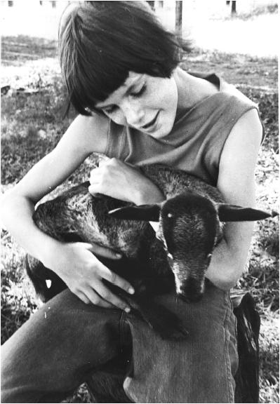

第1章 开启大门
每个人都能提升学习能力
要是打开冰箱门，发现里面有只小恶魔正在织毛袜，这种事情发生的概率会有多大？大概和发生在我身上的事一样小吧，没想到像我这种既有点情感张扬，又是语言导向型的人，最终竟成了一名工程学教授。
从小到大，我都对数学和科学深恶痛绝。高中的数理课程一直不及格，三角学还是到26岁才补起来的。
少年时期，就连读钟表这么简单的事情我都摸不着头脑。为什么钟表上现在的小指针指着小时数？既然小时比分钟重要，不该用大指针指它吗？现在钟上是10点10分，还是1点55分？我永远是迷糊的。比钟表更让我困扰的是电视机。在还没有遥控器的年代，我甚至弄不清哪个是开关按钮，只有在哥哥姐姐陪着的时候才能看上一集电视节目。他们不仅会开电视，还会调到我们想看的频道，真厉害。
关于自己对技术的理解无能，以及数理科目的不断挂科，我唯一能得出的结论就是不够聪明——至少不是那种聪明。尽管当时并没意识到，但这种技术、科学、数学无一能通的自我评价确实塑造了我的生活。这一切的根源就是在数学上的困扰。我曾把数字、方程之类的东西视若洪水猛兽，唯恐避之不及。那时我不知道，本有一些简单的思维小技巧可以让数学走进我的视野。这些小技巧不仅对数学差的人有所帮助，数理优等生也同样可以从中受益。我也没有意识到，自己的思维方式，正是自认与数理无缘的人群中非常典型的一种。不过现在我明白了，问题源于两种截然不同的看待世界的方式。而那个只知道用一种方式去学习的我，结果必然一愁莫展。
数学是美国学校体系中普遍开设的科目，可谓“众学科之母”。它飞越加减乘除，向更高处攀升，逻辑缜密，蔚为壮观，然后横扫直贯，升向美不胜收的数学天国。但数学也会是一个“恶毒的继母”。只要你不小心在逻辑链条的任意一环上行差踏错，即使是非常简单的一环，她也毫不留情。要是不巧正处于人生的非常时期——家庭生活破裂、老师对你无可奈何、自己又不幸抱病，那用不上一两个星期，你就会被数学宣布出局。
或是和我情况相似，只是对数学毫无兴趣，又或是看起来没什么天赋。
初一的时候，我的家庭遭遇了重大变故。父亲因背部受重伤丢掉了工作，我进了一处贫民校区。那里有个坏脾气的数学老师，他总叫我们在闷热的教室里坐上好几个小时，没完没了地背他那些加减乘除口诀。雪上加霜的是，坏脾气先生还拒绝给我们任何解答。看着我们抓耳挠腮，似乎他还引以为乐。

10岁的我与小羊厄尔。那时的我喜爱小动物，热爱阅读和幻想。我的字典里才不会有数学和科学。
这样一来，我不仅看不到数学的用处，还开始厌恶它。从我科学课程的进展来看呢——好吧，其实就没有什么进展。还记得我第一次做化学实验时，老师故意给我和我的搭档分发了与别人不同的实验材料。为了与所有人的实验结果保持一致，我们编造了实验数据，并为此遭受了一番大大的冷嘲热讽。我的父母发现我挂科后，又善意地敦促我在答疑时间向老师寻求帮助。我就更觉得自己认清了真相：反正数学和科学一无是处。可是课程大纲高高在上，老天这是要掰开我的嘴巴，把数学和科学灌下去。而我的精神胜利法就是拒绝理解老师教的一切知识，挂掉每一次考试，跟它对着干。某种程度上来说，这种精神胜利法简直战无不“胜”。
不过，我倒是有着别的兴趣。我喜欢历史、社会研究、文化，尤其是语言。很幸运，这些科目拉高了我的总分。
高中一毕业我就参军了，因为军队真的会花钱让我去学外语。我俄语学得特别好（选修俄语还是脑子一热做出的决定），以至于预备役军官训练营（ROTC）的一份奖学金自己找上了门。于是我前往华盛顿大学，攻读斯拉夫语言与文学的学士学位，并以荣誉毕业生身份毕业。我的俄语流畅自如——发音标准到常被误认为是母语使用者。我将大把的时间花在这门专长上，形成了良性循环——学得越好，就越喜欢学；而越喜欢学，就会在它上面花越多的时间。我的成功促成了练习欲望，练习又回馈给我更多的成功。
但没想到的是，最后我竟成了美军通信兵部的一名陆军少尉。突然之间，我就得成为一名无线电、电报、电话转换系统的专家了。真是30年河东，30年河西啊！我原本在自己的小天地里高枕无忧，好好地当着专业语言学家，命运在握，可一夕之间就被丢进了技术新世界，整个人呆若木鸡。
这可如何是好！
我被安排参加了一个数学方向的电子技术培训（毕业时的成绩是班级垫底），然后就启程去了西德。在那儿我充任一名可怜兮兮的通信排排长，而周围的军官和士兵都是技术上的能人巧匠，能在第一时间解决问题，让每个人得以完成任务。
我开始对职业生涯进行反思。这才惊觉，曾经对内心狂热的执迷追逐，事实上阻碍了自己敞开双臂，培养新的爱好。结果就是无意中局限了自己。如果继续留在军队，我恐怕会因为技术上的一问三不知，被永远当成个“二等公民”。
另一方面，如果退伍，仅凭一个斯拉夫语和文学专业文凭，我会不会一无是处？俄语语言学家能选择的工作机会可不多。基本上就意味着和成千上万的大学文科毕业生竞争初级文秘类工作。有些吹毛求疵的朋友可能会纠正说，仅凭我在学术和服役期间的优秀表现，完全可以找到一份更好的工作。我猜他们可能并不知道就业市场有多残酷。
幸好，当时我还有个不同寻常的选择。服役的最大好处之一，就是可以用美军发放的退役费支付我未来的进修学费。我能不能用这笔助学金重塑自己呢？这是原来想都不敢想的事。我能不能克服数学恐惧症，转而成为数学爱好者呢？从技术恐惧症患者变成技术狂人呢？
这种事我闻所未闻，而且就算有，大概也没有人的恐惧症能比我还严重。在我的世界里，学好数理简直是天方夜谭。但从一同服役的战友身上，我看到了学好数理知识切切实实的好处。
于是它成了一个挑战——一个让我难以拒绝的挑战。
我决定重新训练自己的大脑。
这并不容易。我在可怕的挫败感中度过了第一学期，感觉就像被蒙着眼睛扔了出去。身边的绝大多数同学似乎天生就有一双看出答案的慧眼，而我却总是跌跌撞撞，像无头苍蝇似的。
但我逐渐摸清了原因所在。部分说来，我的根本问题是把力气用错了地方——就像试图搬起踩在自己脚下的木头。我开始掌握一些小技巧，它们不仅让我学会如何学习，也让我懂得适可而止。我认识到，如果能把某些概念和技巧转化为自己的一部分，它们就会成为我的强大武器。同时，我告诉自己，不要试图一口吃个胖子，要给自己充裕的练习时间——就算我的同学会不时地先于我毕业，毕竟我一个学期学不了他们那么多课程。
当我渐渐学会如何学习，事情就变得简单起来了。让我惊喜的是，这就跟学语言那时候一样，我学得越好，就越喜欢学。我这个当年的数学糊涂大王，紧接着就拿到了电气工程学士学位和电子与计算机工程的硕士学位。最后我还拿到了系统工程学的博士学位，并拥有了广泛的学术背景，如热力学、电磁学、音响学、物理化学。我越往上读，就学得越好。到了读博期间，我几乎科科优秀，可谓春风得意。（好吧，可能也没那么得意。好成绩还是得靠下苦功，不过我倒是清楚该在哪里下工夫了。）
作为工程学教授的我，目前对大脑的内部运作产生了兴趣。自从了解到工程学是医学成像的核心，而我们又能从医学成像中巧妙地获得大脑的功能信息，我就不由得感兴趣起来。对于如何才能改变大脑思维，以及为什么能让它发生变化，现在我有了更清晰的答案。我还知道如何帮你更有效地学习，免得你像我当年一样忙得焦头烂额，还落得一败涂地。[1]同时，作为一个学术范围横跨工程、社科、人文领域的研究者，我也非常清楚创造力的重要性，它不仅是艺术与文学的基础，更是数学和科学的基础。
如果你认为自己天生不是学数理的那块料（或者暂时还这么认为），那这儿有个惊喜：你的大脑生来就配备了非凡的心算能力。我们每一次接球、每一次随节拍舞动、每一次开车绕过路面的坑，都是在做心算的过程。我们常常无意识地做出许多复杂计算，解决许多复杂方程。有时我们却又四处寻找，意识不到答案早已是囊中之物。[2]事实上，我们对数理知识都有着天生的敏锐和直觉。想要学好，需要掌握的只是数理学科独有的语言和知识背景。
在写这本书的过程中，我联系了数百名世界一流的任教教授，有些来自数学、物理、化学、生物、工程的领域，也有些来自教育学、心理学、神经科学等学科，以及商科、健康科学等专业学科。让我惊讶万分的是，这些世界一流的专家不止一次说到我在书中描述的学习方法，他们学习的时候也一样在用。专家也正是拿这些方法来要求自己的学生——但由于它们有时看起来违背直觉，甚至堪称荒谬，教师也往往感到难以传达出其简单本质。事实上，因为普通教师把其中的一些学习和教学方法当作笑话，所以向我透露教学和学习的小秘密时，明星教师有时会羞于启齿。他们不知道，许多其他顶级教师也在使用类似的方法。只要在这本书里釆拾有益的观点，你也能轻松学习和运用这些来自教育达人的实用方法。这些方法的价值尤其在于，它们能帮你在有限的时间内，更深入高效地学习。书中也能看到来自学生或其他学习者的感悟——他们都是和你有着相同困境和忧虑的人。
请记住，这本书对于数学家和恐数症患者来说都是良方。它的目的是让你能更轻松地学习数理知识，不管你以前学得怎么样，也不管你认为自己学得好不好。本书就是要让你的思维过程暴露于光天化日之下，让你明白大脑如何学习，又是如何帮你自欺欺人——自以为在学，实际上却是在小和尚念经。这本书里还有许多开发技能的小练习，都可以现学现用到你的学习过程中。如果你已经能玩转数理知识，那么书中这些见解会带你更上一层楼。你会更加乐在其中，有更多奇思妙想，更能镇定自若地解开每一个方程。
如果你就是执意认为自己没有数理天分，这本书可能会改变你的看法。这也许难以置信，但谁说改变是不可能的呢。当你遵循这些基于实际学习过程的具体建议前行时，会惊奇地发现自己内在的转变，而正是这些变化滋养孕育着新的热情。
意识到自我的转变，会进一步提升学习效率和创造力。不仅是数理知识上的学习，在生活中的方方面面，你都会有长足的进步。
这就开始行动吧！
[1] 我向教育者推荐这本书《重新定向》（Redirect），作者是心理学教授Timothy Wilson。书中描述了“失败到成功的故事”的深远意义（Wilson 2011）。帮助学生改变他们的内心表述方式是这本书的重要目标之一。在描绘改变和成长在思维模式中的重要性上，Carol Dweck（Dweck 2006）则是一位领军人物。
[2] Sklar et al.2012；Root-Bernstein and Root-Bernstein 1999，chap.1。